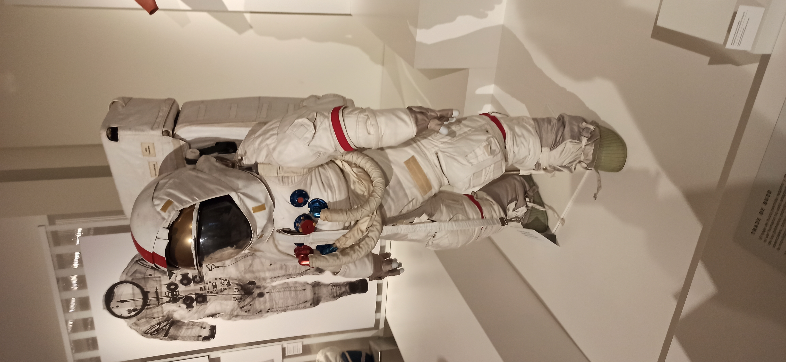

Nuestra futura ciudad de vacaciones espacial debe ser habitable.
Para ello deben cumplirse unas condiciones de habitabilidad, que explorarás en esta parte de la unidad.
Estás condiciones serán muy importantes de cara al futuro diseño de los edificios espaciales, ya que no todos los edificios son iguales.
Vamos a por ello.
1. Explorando la tierra y el espacio
La vida en el espacio no será fácil, antes de empezar la construcción de los edificios debemos explorar, las distintas condiciones que nos encontraremos allí, ¿será la vida fácil?
Contestad juntos las siguientes preguntas.
¿Qué necesita el ser humano para sobrevivir?
¿Qué necesitaría un edificio para poder ser construido en el espacio y que podamos vivir en él?
¿Cómo creéis que podremos llevarlo a cabo en el espacio?
¿Conoces viajes al espacio que se hayan realizado últimamente?
¿Qué equipo de personas creéis que se necesita para organizar un viaje al espacio?
¿Te gustaría viajar a ti? ¿Con quién irías?
¿Dónde te gustaría viajar?
¿Con quién viajarías?
¿Cómo viajarías?
¿Te plantearías quedarte en ese lugar para siempre? ¿Por qué?
¿Qué he aprendido de mis compañeros? Incorpora las ideas que hayas recogido de la puesta en común.
Lumen dice ¿Necesitas ayuda?
¿No recuerdas qué aspectos son imprescindibles para la vida? En el siguiente video puedes ver lo que necesitaría el ser humano para vivir en la luna.
2. Identifico lo que tengo que hacer
Ya conoces qué reto te proponemos alcanzar y te acabamos de plantear una actividad que te acercará a la meta. Pero para tener éxito en tu camino, necesitarás algunas estrategias que te servirán para esta y otras tareas parecidas. Las irás descubriendo en un diario que llamamos tu Diario de Aprendizaje. ¡Te proponemos que lo abras y completes el PASO 1 (Identifico lo que tengo que hacer) del Diario de aprendizaje antes de empezar la actividad que acabas de leer!
Recuerda: 1. Pregunta a tu profesor o profesora si lo vas a rellenar en papel o en el ordenador. 2. Si lo rellenas en el ordenador, no te olvides de guardarlo en una carpeta que más tarde puedas localizar.
¡Ánimo, que lo harás genial!
3. Reflexión
Para llegar a una meta, es conveniente que seas un buen o buena estratega. Es decir, tener métodos, técnicas, “trucos” para llegar antes o de forma más fácil donde tú quieres. Ahora te voy a enseñar una estrategia, ¡Aprovéchala para alcanzar tu reto! El nombre de la estrategia es reflexión. Esta estrategia te ayudará a organizar la información de una forma más visual y ordenar la respuesta para realizar mejor la actividad. Podrás encontrar todo lo que necesitas sobre esta estrategia en el siguiente enlace a la guía de la competencia de aprender a aprender. Tómate el tiempo que necesites y recuerda que siempre puedes preguntarle al docente o a algún compañero o compañera cuando no entiendas algo.
¡Ánimo, que lo harás genial!
4. Bloqueando el proceso
Realiza un diagrama de bloques del proceso que debe seguirse para la construcción de un edificio espacial, desde que investigamos las condiciones de vida, hasta que construimos nuestro edificio. Para ello sírvete de las preguntas que has contestado junto con tu compañero en la actividad anterior.
5. ¿He sido capaz de hacer la actividad?
¡Ya has terminado la actividad, “Bloqueando el proceso”! Cuando empezamos algo que no habíamos hecho antes podemos sentir algo de miedo e inseguridad, esto es algo muy normal. Si completas el PASO 2 (¿Seré capaz de hacerlo?) del Diario de aprendizaje, podrás comprobar que solo con reflexionar sobre esto te ayudará a relajarte, a continuar con la actividad y completarla con éxito. También conseguirás sentir menos inseguridad cuando tengas que realizar las próximas actividades.
Recuerda: 1. Pregunta a tu profesor o profesora si lo vas a rellenar en papel o en el ordenador. 2. Si lo rellenas en el ordenador, no te olvides de guardarlo en una carpeta que más tarde puedas localizar.
¡Ánimo, que lo harás genial!
6. Importancia mujeres carrera espacial
Puedes aprender sobre la importancia de las mujeres en la carrera espacial en el siguiente enlace.
Lectura facilitada
Importancia de las mujeres en la carrera espacial.
Muchas mujeres participaron en la llegada a la luna.
Solo han pisado la luna 18 hombres astronautas.
Ninguna mujer ha pisado la luna.
Pero había mujeres en el equipo de trabajo.
Algunas de estas mujeres se presentan a continuación.
Lo más importante de Poppy Northcutt es:
Su nombre es Frances Northcutt, pero la llamaban ‘Poppy’.
Estudió matemáticas en la Universidad de Texas.
Fue la primera ingeniera de Control de Misiones de la NASA.
Ella analizaba el recorrido de las misiones Apolo.
También ayudó a diseñar el programa informático.
Consiguió que los astronautas del Apolo 13 volvieran a la Tierra.
También estudió derecho para defender a las mujeres.
Recibió la medalla de la Libertad.
Destaca de Margaret Hamilton que:
Era matemática y una gran informática.
Inventó la ingeniería de software.
Dirigía el equipo que diseñó el programa espacial.
El programa espacial se usaba en las misiones Apolo.
No le daba importancia al género.
Daba importancia al trabajo.
Recibió varios premios por su trabajo.
La información más importante sobre Katherine Johnson es que:
Es matemática y sigue trabajando en la misión del Apolo 11.
Sus cálculos fueron muy importantes para misiones de la NASA.
Tuvo dificultades para estudiar ciencia por ser mujer y negra.
Sus cálculos realizaban buenos recorridos.
Los astronautas se sentían seguros con sus cálculos.
De Joann Hardin Morgan destaca que:
Era ingeniera aeroespacial.
Fue la única mujer presente cuando se lanzó el Apolo 11.
Era experta en sistemas de procesamiento de datos.
También era experta en hacer algoritmos.
Se encargaba del programa Apolo.
En la misión Artemisa irá por primera vez una mujer a la Luna.
Esta misión ser hará en 2024.
Apoyo visual
Kardia dice Lectura sobre la importancia de las mujeres en el espacio
Quizás no sepas que la participación de las mujeres en la carrera espacial ha sido fundamental. Tuvieron un papel protagonista desde las primeras misiones, aunque su trabajo no ha sido reconocido por la historia. A continuación, puedes realizar una lectura sobre cómo han participado en hitos espaciales anteriores.
7. Situaciones pasadas y presentes
Para nuestros antepasados, el fondo marino era un mundo por explorar, y en gran parte aún lo sigue siendo. Aquí tienes unas imágenes los distintos trajes utilizados durante las misiones para explorar lo desconocido.
Imagen traje globo aerostático
Los primeros viajes espaciales, se hicieron en globo, para ello utilizaban este trate:
Imagen traje buzo
También se exploró lo desconocido dentro de la tierra, bajaban al fondo del mar con estos trajes.
Imagen astronauta
Y para viajar al espacio...

Contestad a las siguientes preguntas:
¿En qué se parecen los trajes de las imágenes?
¿Encuentras algún parecido entre descubrir el fondo marino y el espacio?
¿Conoces la parte de la tierra hace la misma función que estos trajes?
8. Puesta en común.
Junto con otra pareja de compañeros. Poned en común las respuestas de las preguntas de los ejercicios anteriores.
9. Ahora te toca a ti.
Individualmente, realiza una redacción explicando cómo serían las condiciones de vida que se encontrarían nuestros antepasados tanto en:
Exploración submarina.
Primeras subidas al espacio.
Motus dice ¿Has necesitado ayuda?
Siempre podemos contar con la ayuda de los compañeros y compañeras. ¡Qué suerte!
Todos tenemos superpoderes para resolver las actividades, pero cuando los unimos, aprendemos juntos y somos capaces de resolver cualquier desafío.
Si necesitas ayuda en cualquier momento pregunta a un compañero o compañera. También puedes pregunar al profe.